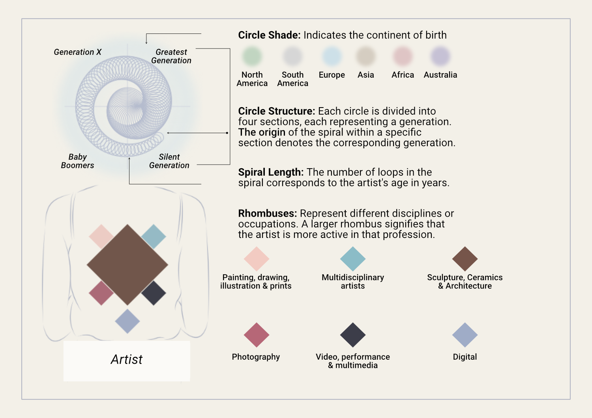

In the 20th century, women artists made significant contributions across various disciplines. Drawing from the list of contemporary women artists on Artcyclopedia, I have mapped down 346 contemporary women artists, highlighting their primary disciplines, ages, generational cohorts, and continents of birth. This mapping underscores the diverse talents and global presence of women in the art world.
